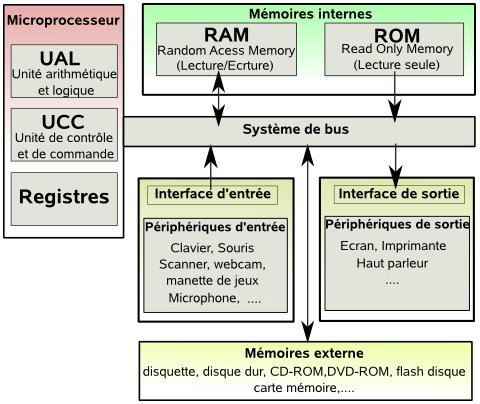
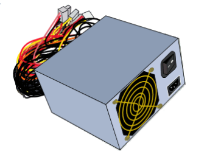
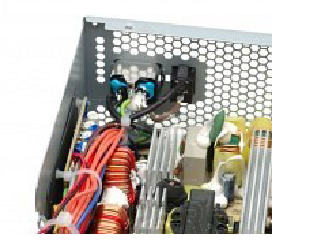
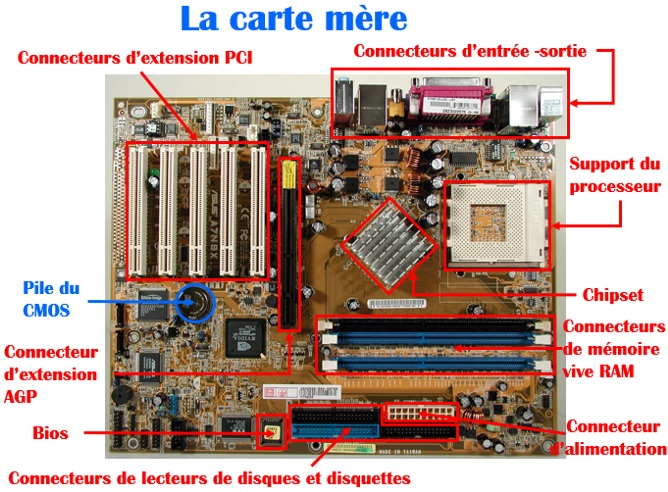
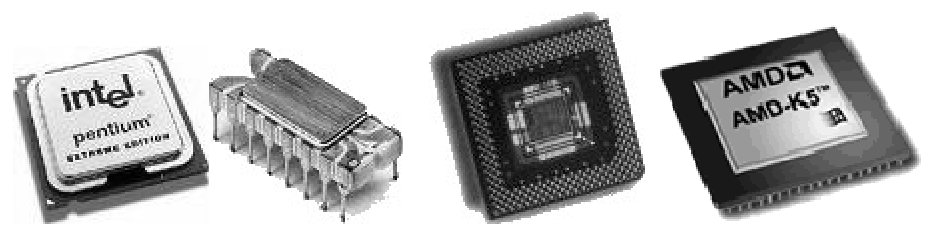
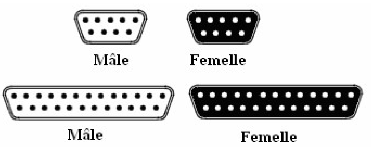
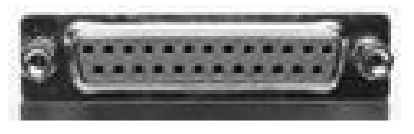
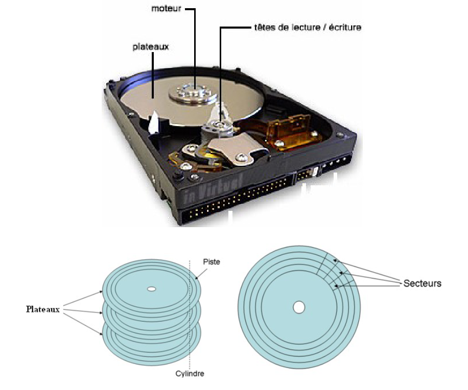
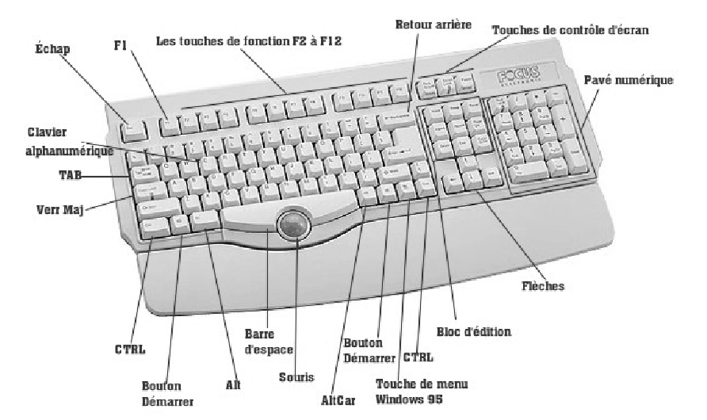

1 Partie matérielle de l’ordinateur
On distingue dans un ordinateur deux types de composantes: les composantes matérielles (hardware) et les composantes logicielles (software). Ce chapitre présente les composantes matérielles de l’ordinateur qui sont réparties entre l’unité centrale, les unités de stockages et les périphériques d’entrées/sorties.
1.1 Architecture de Von Neuman
L’architecture de von Neumann est un modèle structurel d’ordinateur dans lequel une unité de stockage (mémoire) unique sert à conserver à la fois les instructions et les données demandées ou produites par le calcul. Les ordinateurs actuels sont tous basés sur des versions améliorées de cette architecture.

L’architecture de von Neumann décompose l’ordinateur en 4 parties distinctes:
- l’unité arithmétique et logique (UAL ou ALU en anglais) ou unité de traitement: son rôle est d’effectuer les opérations de base;
- l’unité de contrôle ou de commande (control unit), chargée du « séquençage » des opérations;
- la mémoire qui contient à la fois les données et le programme qui indiquera à l’unité de contrôle quels sont les calculs à faire sur ces données;
- les dispositifs d’entrée-sortie, qui permettent de communiquer avec le monde extérieur.
1.2 Composantes d’un ordinateur
1.2.1 L’unité centrale
L’unité centrale, c’est l’organe principal de l’ordinateur, elle renferme plusieurs composants destinés au traitement et à la circulation de l’information. Dans l’unité centrale, on trouve:
- le bloc d’alimentation;
- la carte mère (microprocesseur, mémoire centrale, mémoire morte, l’horloge…);
- les mémoires de masses (disque dur, lecteurs de CD-ROM…);
- les cartes additionnelles (carte réseau, carte son, carte vidéo, …).
1.2.1.1 Le bloc d’alimentation
Le boîtier héberge un bloc d’alimentation électrique, chargé de fournir un courant électrique stable et continu à l’ensemble des éléments de l’ordinateur.


1.2.1.2 Carte mère
La carte mère (motherboard en anglais) est le circuit imprimé principal de l’ordinateur. Sur cette carte, tous les composants du PC sont connectés. La carte mère contient entre autres : le socket (connecteur) pour le processeur, des supports mémoire vive, des ports pour les cartes d’extension.

1.2.1.3 Microprocesseur
Le microprocesseur (CPU : Central Processing Unit ou Unité Centrale de Traitement) est le cerveau de l’ordinateur. Il permet de manipuler, de circuler les informations et d’exécuter les instructions stockées en mémoire. Toute l’activité de l’ordinateur est cadencée par une horloge unique.

Le microprocesseur est caractérisé par la cadence maximale à laquelle il est capable de travailler, par la taille et le nombre de données qu’il peut manipuler. Plus la circulation des données est rapide, plus l’ordinateur sera jugé performant.
On emploie généralement les termes suivants:
- Fréquence de l’horloge: la fréquence de l’horloge de la carte mère qui cadence le microprocesseur;
- Largeur des données: Le premier nombre indique le nombre de bits sur lequel une opération est faite. Le second nombre indique le nombre de bits transférés à la fois entre la mémoire et le microprocesseur;
- MIPS: le nombre de millions d’instructions complétées par le microprocesseur en une seconde.
| Date | Processeur / Système | Frquence de l’horloge | MIPS | Source |
|---|---|---|---|---|
| 1951 | UNIVAC I | 2,25 MHz | 0,002 | |
| 1981 | Motorola 6802 | 3,58 MHz | 0,5 | source |
| 1991 | Intel i860 | 50 MHz | 50 | source |
| 1994 | Intel DX4 | 100 MHz | 70 | |
| 1994 | Intel Pentium | 100 MHz | 188 | |
| 1996 | Intel Pentium Pro | 200 MHz | 541 | |
| 1999 | Intel Pentium III | 600 MHz | 2054 | |
| 2003 | Intel Pentium 4 Extreme Edition | 3,2 GHz | 9726 | |
| 2008 | Intel Core i7 920 (4-core) | 2,93 GHz | 82300 | |
| 2011 | Intel Core i7 875K | 2,93 GHz | 92100 | |
| 2016 | Intel Core i7 6950X (10-core) | 3,5 GHz | 320440 | |
| 2021 | Intel Core i5-11600K (6-core) | 4,92 GHz | 346350 |
Le microprocesseur Figure 1.4 est constitué:
- d’une unité de commande qui est responsable de la lecture en mémoire et du décodage des instructions;
- d’une unité de traitement (Unité Arithmétique et Logique (U.A.L.)) qui exécute les instructions.
1.2.1.3.1 L’unité de commande
L’unité de commande est constituée de plusieurs organes qui permettent la recherche en mémoire et le décodage d’une instruction. L’unité de commande est constituée des éléments suivants:
- Le compteur ordinal: c’est un registre contenant l’adresse de l’instruction en cours;
- Le registre d’instruction: il contient l’instruction suivante;
- Le décodeur d’instructions: c’est un dispositif qui traduit le code de l’instruction reçu en signaux qui sont transmis au séquenceur;
- Le séquenceur: il est chargé de synchroniser l’exécution des instructions à la cadence de l’horloge. Il est ainsi chargé de l’envoi des signaux de commande.
1.2.1.3.2 L’unité de traitement
Cette unité utilise les données stockées en mémoire, effectue des calculs dont les résultats sont eux aussi stockées en mémoire ou acheminés vers un périphérique de sortie.
1.2.1.4 La mémoire
La mémoire est un composant de base de l’ordinateur, son rôle est de stocker les données avant et pendant leur traitement par le processeur. Ces données sont d’apparence binaire et mémorisées sous forme d’impulsions électriques (une impulsion est égale à 1, aucune impulsion est égale à 0 ou l’inverse).
1.2.1.4.1 Mémoire vive
La mémoire vive appelée également mémoire centrale ou RAM (Random Access Memory) permet de stocker temporairement les données et programmes en cours de traitement. Les données contenues dans la mémoire vive sont perdues lorsque le courant électrique est coupé. La mémoire vive se présente sous la forme de barrettes qu’on insère dans un connecteur de la carte mère. On peut souvent augmenter la taille mémoire en ajoutant des barrettes de RAM.
Les caractéristiques de la mémoire vive sont:
- sa rapidité d’accès : cette rapidité est essentielle pour fournir rapidement les données au processeur;
- sa volatilité : cette volatilité implique que les données sont perdues dès que l’alimentation électrique est coupée.
Pour mesurer la taille mémoire, on utilise l’Octet:
- Un octet = 8 bits;
- Un kilo-octet (Ko) = 1024 octets ≈ 103 octets;
- Un méga-octet (Mo) = (1024)2 octets ≈ 106 octets;
- Un giga-octet (Go) = (1024)3 octets ≈ 109 octets;
- Un tera-octet (To) = (1024)4 octets ≈ 1012 octets;
On peut aussi parler de Kbits, Mbits, Gbits. 1Kbits = 103 bits, 1Mbits= 103 kbits, 1 Gbits= 103 Mbits.
1.2.1.4.2 Mémoire morte
La mémoire morte (en anglais ROM = Read Only Memory) est une mémoire en lecture seule, appelée aussi mémoire non volatile, c’est-à-dire une mémoire qui ne s’efface pas à l’extinction de l’ordinateur. Elle stocke le programme de base pour démarrer et utiliser un ordinateur (le BIOS : Basic Input Output System).
1.2.1.4.3 Mémoire cache
La mémoire cache est une petite mémoire à accès rapide qui sert de tampon entre la mémoire vive et le processeur. Elle stocke les informations les plus souvent utilisées, permettant ainsi de réduire les états d’attente du microprocesseur. Lorsque le microprocesseur veut traiter des données, il accède d’abord au cache interne, s’il ne trouve pas les données, il accède au cache externe, puis à la RAM. On distingue deux types de caches:
- Cache interne: c’est une mémoire ultra rapide intégrée au microprocesseur. Elle stocke les données les plus utilisées;
- Cache externe: si le microprocesseur ne trouve pas les données dans la cache interne, il les cherche dans la cache externe. La cache externe est moins rapide que la cache interne mais plus rapide que la RAM.
Le processeur est plus rapide que la mémoire RAM, celle-ci est beaucoup plus rapide que le disque dur. Une cache disque est utilisée entre le disque dur et la mémoire, lorsque l’ordinateur écrit sur le disque, les données sont placées dans la cache disque, elles sont alors écrites lentement (à la vitesse maximale du disque dur) alors que l’ordinateur peut s’occuper à faire autre chose. Lorsque l’ordinateur désire lire sur le disque, le cache disque peut avoir lu d’avance ou posséder des données lues auparavant, celles-ci sont alors tirées directement de la cache disque sans avoir à passer par le disque dur. Non seulement l’ordinateur peut-il lui même utiliser une partie de sa mémoire RAM comme cache entre lui et le disque dur (cache logicielle), mais les concepteurs de disques durs ont également ajouté une petite quantité de mémoire directement sur les contrôleurs de disques durs comme cache (cache matérielle) et c’est la norme actuellement dans la fabrication des disques dur.
1.2.1.5 Les bus
Les bus constituent le système de communication central de l’ordinateur. Ils relient le processeur à la mémoire centrale et aux cartes d’extensions, c’est par leur intermédiaire que transitent toutes les informations entre les différents composants d’un ordinateur. On distingue trois types de bus :
- Le bus de données transférant les données entre le processeur et les autres parties. C’est un bus bidirectionnel;
- Le bus d’adresses par lequel le processeur indique l’adresse mémoire à laquelle sont écrites ou lues les données;
- Le bus de commande (ou contrôle) par lequel le processeur envoie des codes de commande aux différents organes.
On a par exemple:
- Le bus système: appelé aussi FSB (Front Side Bus). C’est le bus qui assure le transport de données entre le processeur et la mémoire vive;
- Le bus série : c’est le bus que tous les PC possèdent, celui qui débouche sur le port servant à brancher une souris ou un modem, ou encore certains périphériques de jeux. Ses défauts sont sa lenteur extrême car les données ne sont envoyées que bit par bit (0 ou 1); - Le bus parallèle: c’est le bus qui communique avec le port parallèle, qui sert à brancher l’imprimante, le scanner, des graveurs externes, etc. Il est 8 fois plus rapide que le port série (les informations sont transmises par tranche de 8 bits en parallèle, soit 1 octet à la fois), mais toujours lent si on le compare aux bus USB;
- Le bus USB (Universal Serial Bus) : il est largement plus rapide que le bus parallèle et peut aller à la vitesse de 1.5 Mo par seconde pour l’USB 1.1. L’USB 2.0 peut quant à lui monter à 60 Mo par seconde et l’USB 3.0 jusqu’à 500 MB par seconde. Il est relié au port USB qui sert à brancher presque tous les périphériques du marché : webcams, modems, imprimantes, scanners, etc.
- Le bus AGP (accelerated graphic port) : Il est apparu avec le Pentium II en 1997. Il permet de traiter 32 bits à la fois et à une fréquence de bus de 66 MHz. Ses qualités sont sa rapidité (500 Mo par seconde pour le 2 X et 1 Go pour le 4 X, et maintenant 2 Go par seconde pour le 8x). Il communique avec le port AGP;
1.2.1.6 Connecteurs d’extension
Les connecteurs d’extension sont des emplacements disponibles sur la carte mère destinés à recevoir des cartes d’extension, c’est-à-dire des cartes offrant de nouvelles fonctionnalités à l’ordinateur. Il existe plusieurs sortes de connecteurs:
- Connecteur d’extension AGP : (Accelerated Graphics Port) est l’emplacement réservé à la carte graphique;
- Connecteurs d’extension PCI : (Peripheral Component Interconnect) est l’emplacement où sont connectées les différentes cartes de votre ordinateur (carte son, carte réseau, etc.).
Parmi les cartes d’extension les plus courantes, on peut citer:
- Carte graphique : est une carte d’extension dont le rôle est de produire une image affichable sur un moniteur d’ordinateur;
- Carte son : est une carte d’extension permettant d’écouter de la musique et des sons sur votre ordinateur. Elle s’implante dans un connecteur PCI;
- Carte réseau : est une carte d’extension permettant de connecter un ordinateur à un réseau.
1.2.1.7 Ports de communication
Les ports d’entrée-sortie sont des éléments matériels de l’ordinateur, permettant au système de communiquer avec des éléments extérieurs, c’est-à-dire d’échanger des données, d’où l’appellation d’interface d’entrée-sortie.
1.2.1.7.1 Ports série
Le port série est un port sur lequel on ne peut envoyer les données que bit par bit, les uns après les autres. Ce port peut se présenter sous la forme d’un connecteur 9 ou 25 broches (le nom du connecteur est DB-9 ou DB-25 suivant le nombre de broches). Sur un port série on peut brancher un modem, un scanner, une souris ou un appareil photo numérique.

1.2.1.7.2 Port parallèle
Le port parallèle est basé sur un transfert de type parallèle. C’est-à-dire que les 8 bits d’un octet sont envoyés simultanément. Ce type de communication est nettement plus rapide que celui d’un port série. Un port parallèle permet de connecter une imprimante.

1.2.1.7.3 Port USB
Le port USB (Universal Serial Bus) est basé sur une architecture série pour deux raisons principales:
- L’interface série permet d’utiliser une cadence d’horloge beaucoup plus élevée qu’une interface parallèle (dans une architecture parallèle à haut débit, les bits circulant sur chaque fil arrivent avec des décalages, provoquant des erreurs);
- Le câble série est plus économique que le câble parallèle.
Les ports USB supportent le Hot Plug & Play, c’est-à-dire qu’un périphérique peut être connecté et reconnu, sans redémarrage de l’ordinateur. Les périphériques qui disposent actuellement de ce type de port sont les imprimantes, scanners, Webcams, etc.
1.2.2 Les unités de stockage
Une mémoire de masse est une mémoire de grande capacité, non volatile. Elle conserve les données de manière permanente. Les mémoires de masse les plus utilisées sont :
- le disque dur pour les informations qui devront être traitées ultérieurement;
- le CD-ROM et le DVD pour les copies de sauvegarde;
- la clé USB et disquette pour le transfert d’information entre micro-ordinateurs.
1.2.2.1 Le disque dur
Le disque dur est un support composé de disques magnétiques sur lesquels on peut stocker de très grandes quantités d’informations (20 Go, 40 Go, 80 Go, 120 Go, …). Un disque dur est formé de plusieurs plateaux circulaires superposés entre lesquels flottent des têtes de lecture et écriture et d’un moteur central permettant la rotation de tous les plateaux en même temps.

Chaque plateau est composé de pistes concentriques. Les pistes situées à un même rayon forment un cylindre. Les pistes sont ensuite découpées en secteurs qui sont l’unité élémentaire de stockage et dont la taille est de 512 octets. Les caractéristiques principales d’un disque dur sont les suivantes:
- Capacité: volume de données pouvant être stockées sur le disque;
- Taux de transfert (ou débit): quantité de données pouvant être lues ou écrites sur le disque par unité de temps. Il s’exprime en bits par seconde;
- Vitesse de rotation: vitesse à laquelle les plateaux tournent, exprimée en nombre de tours par minute. La vitesse des disques durs est de l’ordre de 7200 à 15000 rpm (rpm : Rotation Par Minute).
Calcul de la taille (capacité) d’un disque dur:
\[Capacité = Nt \times Nc \times Ns \times 512 o\]
Ou:
- Nt: nombre de têtes (ou de faces)
- Nc: nombre de cylindres
- Ns: nombre de secteurs
- o: octets
1.2.2.2 Le lecteur CD-ROM
Le lecteur CD-ROM permet de lire les informations se trouvant sur les disques CD-ROM. Le CD-ROM (Compact Disc - Read Only Memory) est une mémoire de masse à lecture seule, les données y ont été inscrites une fois pour toute. On ne peut plus effacer leur contenu. Le CD-ROM est un disque optique de 12 cm de diamètre et de 1mm d’épaisseur, permettant de stocker des informations numériques correspondant à 650 Mo de données informatiques. Un trou circulaire en son milieu permet de le centrer sur la platine de lecture. Un lecteur CD-ROM est caractérisé par les éléments suivants:
- Vitesse : la vitesse d’un lecteur de CD-ROM est calculée par rapport à la vitesse d’un lecteur de CD audio. Un CD audio lit 150 Ko/s par seconde (1x). Un lecteur de CD-ROM capable de lire 30000 Ko/s sera appelé un lecteur 20x. Remarque : Le X représente une vitesse de 150 Ko/s, ce qui signifie qu’un lecteur de CD 2X à un débit de 2150= 300 Ko/s alors qu’un lecteur de CD Rom 40X a un débit de 40 150 = 6 000 Ko/s.
- Temps d’accès : est le temps moyen pour aller d’une partie du CD à une autre.
1.2.2.3 Le graveur
Le graveur de CD-ROM est un outil qui permet de réaliser des sauvegardes sur des CD-ROM. Il utilise deux sortes de disques : CD-R et CD-RW. Un graveur CD/DVD permet de lire ou graver des DVD, des CD audio et des CD de données.
1.2.2.4 Clé USB
Ce sont des lecteurs amovibles. Branchés sur un port USB, elles peuvent s’ajouter à tout moment sur un ordinateur allumé. Très pratique pour transférer des informations d’un ordinateur à l’autre.
1.2.3 Les périphériques d’entrées/sorties
1.2.3.1 Clavier
Le clavier est un périphérique d’entrée (figure suivante). Il vous permet d’entrer du texte, des chiffres ou des commandes dans votre ordinateur. Il peut être AZERTY, QWERTY ou autre. On désigne par ces noms les “langues” des claviers dont les français ou anglais dont les premières touches sont A,Z,E,R,T,Y et Q,W,E,R,T,Y.

Un clavier comporte 4 grandes zones:
- Le pavé numérique, rendu actif par la touche Verr num (contrôlée par un voyant), composé des 10 chiffres et des 4 opérations, ainsi que d’une touche entrée spécifique;
- Le bloc alphanumérique comporte toutes les lettres de l’alphabet, les 10 chiffres, les signes de ponctuation, la barre d’espace et divers autres symboles d’usage courant;
- Le pavé de flèches qui servent à déplacer le curseur en tous sens (gauche, droite, haut, bas), à sauter de page en page, à se positionner au début ou à la fin, à insérer ou supprimer;
- Les touches de fonction de F1 à F12 sont associées à des commandes. Ces touches spéciales permettent d’exécuter plus efficacement des tâches particulières. Les opérations réalisées par ces touches dépendent du logiciel utilisé. Par exemple, la touche F1 sert généralement à afficher l’aide sur l’utilisation du logiciel en cours.
1.2.3.2 Souris
La souris (périphérique d’entrée) est un périphérique de pointage servant à déplacer un curseur sur l’écran et permettant de sélectionner, déplacer, manipuler des objets grâce à des boutons:
- Le bouton gauche:
- Cliquer (clic) est l’action consistant à appuyer une seule fois sur le bouton gauche de la souris, il permet de sélectionner une icône sur le bureau, sélectionner une commande à l’intérieur d’un menu, etc.
- Double cliquer est l’action de cliquer deux fois brièvement sur le bouton gauche de la souris. Cela provoque, sur une icône, l’ouverture d’une fenêtre ou le lancement d’un programme.
- Glisser déplacer : indique le déplacement d’un objet en maintenant le bouton gauche enfoncé et en déplaçant la souris.
- Le bouton droit : Permet d’ouvrir un “menu contextuel” en rapport avec la situation du pointeur ou l’objet sélectionné.
- Cliquer (clic) est l’action consistant à appuyer une seule fois sur le bouton gauche de la souris, il permet de sélectionner une icône sur le bureau, sélectionner une commande à l’intérieur d’un menu, etc.
- Le bouton droit: Permet d’ouvrir un “menu contextuel” en rapport avec la situation du pointeur ou l’objet sélectionné.
- Molette: Elle permet de monter et de descendre rapidement dans l’affichage d’un document.
1.2.3.3 L’ecran
L’écran est un périphérique de sortie qui permet d’afficher du texte et des images traités par l’ordinateur. Il se caractérise par les paramètres suivants:
- La taille de l’écran : Elle se mesure en “pouces” (1 pouce = 2,54 cm) et correspond à la mesure de la diagonale de l’écran.
- La résolution de l’écran : Elle représente le nombre de points que l’écran peut afficher. Elle indique le nombre de pixels (points) affichable à l’écran. Elle est donnée en fonction du nombre de points sur la largeur, suivi de celle en hauteur. Ce nombre de points est actuellement généralement compris entre 640x480 (640 points en longueur, 480 points en largeur) et 1600x1200.